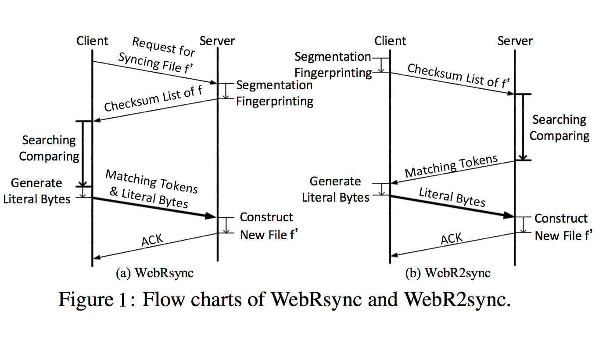
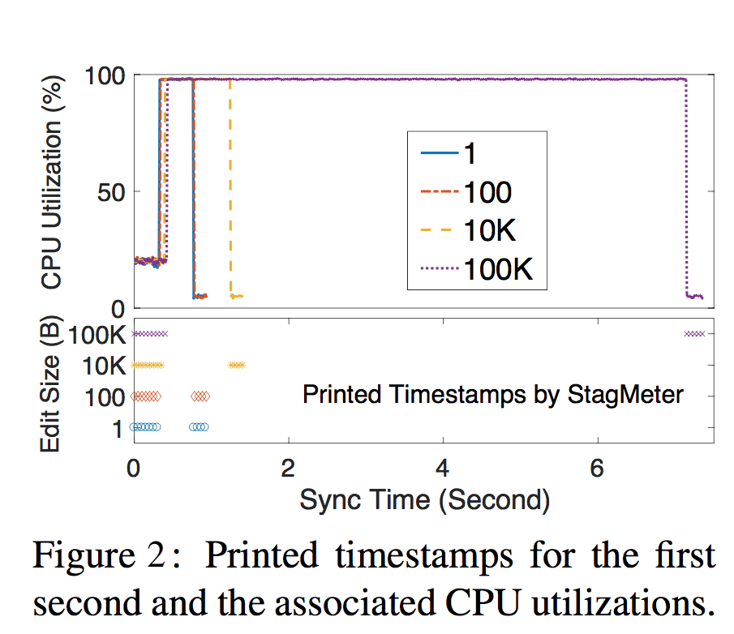

This project strives towards a practical web-based delta sync solution for cloud storage services.
Native Javascript Version of rsync(Tridgell A, Mackerras P. The rsync algorithm[J]. 1996.)
The architecture of WebRsync follows Dropbox’s system architecture. Specifically, we implement the client side based on the HTML5 File APIs and the WebSocket protocol, using 1500 lines of JavaScript codes. The server side is developed based on the node.js framework, using 500 lines of node.js codes and 600 lines of C++ codes.
As depicted in Figure 1, WebR2sync implements the reverse process of WebRsync by handing the computation-intensive search and comparison operations over to the server side, and meanwhile shifting the lightweight segmentation and fingerprinting operations to the client side. Accordingly, the checksum list of f ′ is generated by the client and the matching tokens are generated by the server, while the literal bytes are still generated by the client. Note that on the server side, the codes of search and comparison operations are written in C/C++ rather than in JavaScript. Therefore, WebR2sync can not only avoid stagnation/crashing for the web client, but also effectively shorten the duration of the whole delta sync process.
Server-side Optimizations based on WebR2sync
Leveraging that edits to a file are typically local, when we find that the i-th chunk of f ′ matches the j-th chunk of f , the (i + 1)-th chunk of f ′ is highly likely to match the ( j + 1)-th chunk of f . Therefore, we “sim- plify” the 3-level chunk searching scheme by directly comparing the MD5 checksums of the (i + 1)-th chunk of f′ and the (j+1)-th chunk of f.
By replacing MD5 with SipHash in our web-based delta sync solu- tion, we manage to reduce the computation complexity of chunk comparison by nearly 6 times.
Given that the sync speed of WebRsync is much lower than that of the PC client-based delta sync solution (rsync), our first approach to optimizing WebRsync is to leverage the native client for web browsers. Native client is a sandbox for efficiently and securely executing compiled C/C++ code in a web browser, and has been supported by all mainstream web browsers. In our implementation, we use the Chrome native client to accelerate the execution of WebRsync on the Chrome web browser. Specifically, we first use HTML5 and JavaScript to compose the webpage interface, through which a user can select a local file to synchronize (to the cloud). Then, the path of the selected local file is sent to our developed native client (written in C++). Afterwards, the native client reads the file content and synchronizes it to the cloud in a similar way as rsync. When the sync process finishes, the native client returns an acknowledgement message to the webpage interface, which then shows the user the success of the delta sync operation.
WebRsync-parallel use HTML5 web workers for parallelism or threading. Generally speaking, when executing JavaScript code in an HTML webpage, the webpage becomes unresponsive until the execution is finished. This is why WebRsync would lead to frequent stagnation and even hanging of the web browser. To address this problem, a web worker is a JavaScript program that runs in the background, independently of other JavaScript programs in the same webpage. When we apply it to WebRsync, the original single JavaScript program is divided to multiple JavaScript programs that work in parallel. Although this approach can hardly reduce the total sync time or the CPU utilizations , it can fully avoid stagnation for the Chrome web browser.
WebRsync+ leverages users’ file-edit locality and lightweight hash algorithms to reduce the server side computation overhead. As a matter of fact, the two-fold optimizations can also be applied to the client side. Thereby,we implement the two optimization mechanisms at the client side of WebRsync by translating them from C++ to JavaScript, and the resulting solution is referred to as WebRsync+. WebRsync+ stays between WebRsync and WebR2sync+ in terms of sync time, which is basically within our expectation. Further, we decompose the sync time of WebRsync+ into three stages: at the client side, across the network, and at the server side. Comparing breakdown of the sync time of WebRsync into three stages, we find that the client-side time cost of WebRsync+ is remarkably reduced thanks to the two optimization mechanisms. However, WebRsync+ cannot fully avoid stagnation for web browsers; instead, it can only alleviate the stagnation compared to WebRsync.
Stagmeter automates the measurement of stagnation time by integrating a snippet of JavaScript codes (referred to as StagMeter) into the browser.
Using StagMeter, we measure and visualize the stagnations of WebRsync (on handling various file-edit workloads) in Figure 2. Here StagMeter only attempts to print 10 timestamps for the first second. Therefore, spaces between consecutive timestamps represent stagnations, and larger spaces imply more severe stagnations. Meanwhile, as indicated in Figure 2, stagnations are directly associated with high CPU utilizations.
